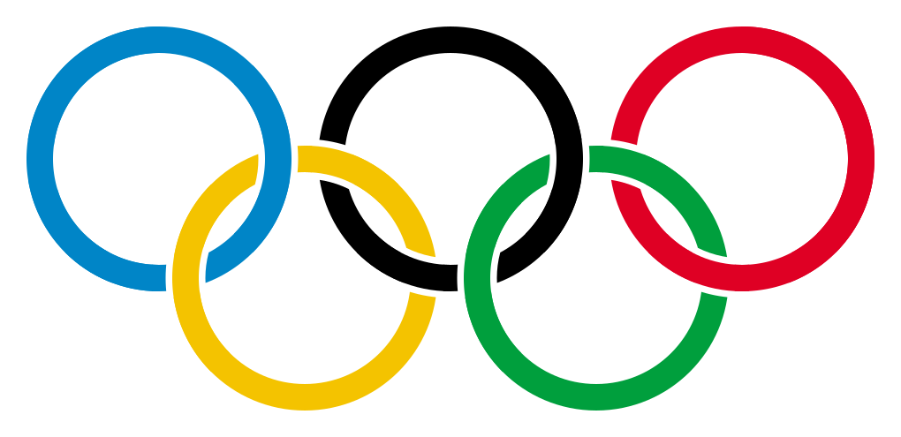

Olympic Games

Welcome to your new lab, here's the instructions for each exercise :
- Read the lesson entirely!!!!
- Identify your learning goals.
- Understand the context.
- Follow the steps and rules carefully.
- Commit ONLY the files that are indicated.
You must try to find documentation and solution by yourself. The course contains links to JavaScript references and a lot of other interesting websites. Don't forget : the web is your friend ;-)
Bon courage...
What time is it Ben?
Learning goals
- Know how to manipulate dates.
- Know how to properly build objects.
- Understand how functions can be passed as arguments.
- Understand how variable scope (local/global) behaves.
- Know how and when to use closures.
Context
In this exercise, we'll try to display a proper Big Ben clock with additionnal infos about the London Olympics.
Steps
Date
- The markup in what-time-is-it-ben.html and the script big-ben.js are not important to understand and finish this lab. If you're curious, don't hesitate to have a look.
- Every second, a
setInterval calls a function called clock.displayDate and passes a function as the only argument. Like this :
setInterval(function () {
clock.displayDate(function(text) {
});
}, 1000);
- The
clock.displayDate function doesn't exist yet, create a file called clock.js and add some code so this function can be called.
- Since we haven't covered how to modify the HTML document yet, this part is provided to you. The function that can update the HTML document is passed as the first argument of your function
clock.displayDate.
- You just need to compute the date according to the correct format (see rules) and pass the string to the function that
clock.displayDate receives as an argument.
Hours and minutes
- Every second, the
setInterval also calls the clock.displayTime and passes two functions as arguments. Like this :
setInterval(function () {
clock.displayDate(function(text) {
});
clock.displayTime(function(angleInDegreesForHours) {
}, function(angleInDegreesForMinutes) {
});
}, 1000);
- The
clock.displayTime function doesn't exist yet, modify your clock.js and add some code so this function can be called.
- This behaves just like for the date. The functions that can update the hands rotation document are passed as arguments of your function
clock.displayTime.
- You just need to compute the angles in degrees and pass the two values to the two functions that
clock.displayTime receives as arguments.
London Time
- It should be obvious that Big Ben is supposed to display London's time. It's a tricky thing to do. For this exercise, we'll just assume that the current Daylight Saving won't change. More details on daylight saving here.
- Your visitors aren't always on the same timezone as you. Your code must work and display the correct time if you're in New-York, Sidney...
- In order to achieve that, the big-ben.js script calls a function
clock.setTimezoneShift like this :
clock.setTimezoneShift(60);
- It sets your clock to the current UTC time + 60 minutes for London (currently with daylight saving).
- Add a
clock.setTimezoneShift function in your code. It takes one parameter, the shift from UTC in minutes.
- It will enable your code to handle more cities in the future...
Rules
- Your date MUST be formatted with leading zeros (if needed like) these examples :
01 October 2012 AM, 21 December 2012 PM...
- You CANNOT have any global variables except
clock.
- The hours hand MUST display intermediate states!! If it's 3:30, it should be between 3 and 4.
- You MUST display the time of London!!
- You CANNOT modify the HTML yourself, you the functions passed as arguments!!!!
Deliveries
- big-ben-bg.png
- big-ben-hours.png
- big-ben-minutes.png
- olympic-games.css
- olympic-london.css
- what-time-is-it-ben.html
- big-ben.js
- clock.js
Binding...
Learning goals
- Know how binding works.
- Know how to prevent binding problems.
Context
You'll be presented some binding examples that don't work. Modify the code so it does what it's supposed to do.
Olympic cities
In olympic-cities.js, the code doesn't use setTimeout the right way. It's supposed to call olympics.displayAllGames but this in the function doesn't seem to be correct.
Modify the file so the code works as explained.
Olympic sports
In olympic-sports.js, the code doesn't use setTimeout the right way. It's supposed to call displaySports using all the objects in the sports array every 1 second.
Modify the file so the code works as explained.
Questions
In both files olympic-sports.js, what is the purpose of the first and last lines ?
(function () {
})();
- Try to explain in details what would happen if we remove those lines.
- Try to explain in details what they do.
- Create a file named
answers.txt and write down you explanations in it.
Rules
- You CANNOT have any global variables except
olympics (in Olympic cities).
- You CANNOT use the same techniques for both excercises.
Deliveries
- olympic-cities.js
- olympic-sports.js
- answers.txt
Once Upon a Past
This is a "be awesome" exercise!
Learning goals
- Know how and when to use closures.
- Discover and experiment.
Context
We're going to use the first exercise and display some cities that hosted the Olympics in the past. Your result will be displayed in once-upon-a-past.html.
Steps
- Modify olympic-cities.js and add a
timezoneShift number property to all the games objects of olympics.games.
- Be sure to use the correct values (including current daylight saving times). London timezoneShift is currently 60 minutes, Turin is 120 minutes...
- Add a
getNextGame function on the olympics object.
- Like the
getUniqueInt in the lesson, getNextGame should always return the next game object in the olympics.games array.
- If you arrived at the end of the array, just return the first object to start the enumaration again.
- Create a file named
game-switcher.js that calls olympics.getNextGame every 10 seconds.
- Once you retrieved a game object using
olympics.getNextGame, get its timezoneShift and use clock.setTimezoneShift.
- Use the
olympics.update function, give it a game object as argument to inject the informations in the page.
- You can add all the properties you want in the games objects, they will be added to the HTML. Be creative.
- You can modify once-upon-a-past.html to add more CSS for the different cities. Look at how the attribute selector on the
html tag works in olympic-london.css
Rules
- You MUST use a closure for the
getNextGame function.
- You CANNOT have any global variables except
clock and olympics.
Deliveries
- big-ben-bg.png
- big-ben-hours.png
- big-ben-minutes.png
- olympic-games.css
- olympic-london.css
- big-ben.js
- clock.js
- olympic-cities.js
- once-upon-a-past.html
- once-upon-a-past.js
- game-switcher.js
- (olympic-vancouver.css)
- (olympic-beijin.css)
- ...